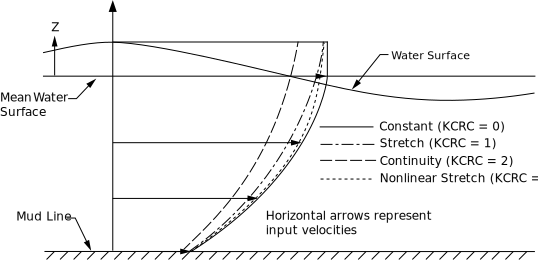

OCDATA, VAL1, VAL2, VAL3, . . . , VAL14
Defines an ocean load using non-table data.
Notes
The OCDATA command
specifies non-table data that defines the ocean load, such as the
depth of the ocean to the mud line, the ratio of added mass over added
mass for a circular cross section, or the wave type to apply. The
terms VAL1, VAL2, etc. are specialized according to the input set required for the
given ocean load.
The program interprets the data input via the OCDATA command within the context of the most recently issued OCTYPE command.
Input values in the order indicated.
This command is also valid in PREP7.
You can define the following ocean data types:
Ocean Data Type: Basic (OCTYPE,BASIC)
For a better understanding of how to set up a basic ocean type, see Figure 7: Basic Ocean Data Type Components .
-
VAL1 DEPTH-- The depth of the ocean (that is, the distance between the mean sea level and the mud line). The water surface is assumed to be level in the XY plane, with Z being positive upwards. This value is required and must be positive.-
VAL2 MATOC-- The material number of the ocean. This value is required and is used to input the required density. It is also used to input the viscosity if the Reynolds number is used (OCTABLE).-
VAL3 KFLOOD-- The inside-outside fluid-interaction key:0 -- The density and pressure of fluid inside and outside of the pipe element (PIPE288 or PIPE289) are independent of each other. This behavior is the default. 1 -- The density and pressure of fluid inside of the pipe element (PIPE288 or PIPE289) are set to equal the values outside of the pipe element. For beam subtype CTUBE and HREC used with BEAM188 or BEAM189 and ocean loading,
KFLOODis always set to 1.-
VAL4 Cay-- The ratio of added mass of the external fluid over the mass of the fluid displaced by the element cross section in the y direction (normal). The added mass represents the mass of the external fluid (ocean water) that moves with the pipe, beam, or link element when the element moves in the element y direction during a dynamic analysis.If no value is specified, and the coefficient of inertia
CMyis not specified (OCTABLE), both values default to 0.0.If no value is specified, but
CMyis specified, this value defaults toCay=CMy- 1.0.If this value should be 0.0, enter 0.0.
-
VAL5 Caz-- The ratio of added mass of the external fluid over the mass of a cross section in the element z direction (normal). The added mass represents the mass of the external fluid (ocean water) that moves with the pipe, beam, or link element when the element moves in the element z direction during a dynamic analysis.If no value is specified, and Cay is specified, this value defaults to Cay.
If no value is specified, and the coefficient of inertia
CMzis not specified (OCTABLE), both values default to 0.0.If no value is specified, but
CMzis specified, this value defaults toCay=CMz- 1.0.If this value should be 0.0, enter 0.0.
-
VAL6 Cb-- The ratio of buoyancy force used over buoyancy force based on the outside diameter and water density. Accept the default value in most cases. Adjust this option only when you must account for additional hardware (such as a control valve) attached to the pipe exterior. A non-default value may lead to small non-physical inconsistencies; testing is therefore recommended for non-default values.If no value is specified, this value defaults to 1.0.
If this value should be 0.0 (useful when troubleshooting your input), enter 0.0.
-
VAL7 Zmsl-- A vertical offset from the global origin to the mean sea level. The default value is zero (meaning that the origin is located at the mean sea level).Two example cases for
Zmslare:A structure with its origin on the sea floor (
Zmsl=DEPTH).A tidal change (
tc) above the mean sea level (Zmsl=tc, andDEPTHbecomesDEPTH+tc)
-
VAL8 Ktable-- The dependency ofVAL1on the OCTABLE command:Z (or 1) -- Values on the OCTABLE command depend on the Z levels (default). RE (or 2) -- Values on the OCTABLE command depend on the Reynolds number.
Ocean Data Type: Wave (OCTYPE,WAVE)
-
VAL1 KWAVE-- The incident wave type:0 or AIRY -- Small amplitude Airy wave without modifications (default). 1 or WHEELER -- Small amplitude wave with Wheeler empirical modification of depth decay function. 2 or STOKES-- Stokes fifth-order wave. 3 or STREAMFUNCTION -- Stream function wave. 5 or RANDOM -- Random (but repeatable) combination of linear Airy wave components. 6 or SHELLNEWWAVE -- Shell new wave. 7 or CONSTRAINED -- Constrained new wave. 8 or DIFFRACTED -- Diffracted wave (using imported hydrodynamic data) 101+ -- API for computing particle velocities and accelerations due to waves and current: 101 through 200 -- Data preprocessed (via KWAVE= 0 logic).201+ -- Data not preprocessed. For more information, see the description of the userPartVelAccsubroutine in the Programmer's Reference.-
VAL2 THETA-- Angle of the wave direction θ from the global Cartesian X axis toward the global Cartesian Y axis (in degrees).-
VAL3 WAVELOC(valid whenKWAVE= 0 through 3, and 101+) -- The wave location type:0 -- Waves act on elements at their actual locations (default). 1 -- Elements are assumed to be at wave peak. 2 -- Upward vertical wave velocity acts on elements. 3 -- Downward vertical wave velocity acts on elements. 4 -- Elements are assumed to be at wave trough. SPECTRUM(valid whenKWAVE= 5 through 7) -- The wave spectrum type:0 -- Pierson-Moskowitz (default). 1 -- JONSWAP. 2 -- User-defined spectrum. -
VAL4 KCRC-- The wave-current interaction key.Adjustments to the current profile are available via the
KCRCconstant of the water motion table. Typically, these options are used only when the wave amplitude is large relative to the water depth, such that significant wave-current interaction exists.0 -- Use the current profile (as input) for wave locations below the mean water level, and the top current profile value for wave locations above the mean water level (default). 1 -- Linearly stretch or compress the current profile from the mud line to the top of the wave. 2 -- Similar to KCRC= 1, but also adjusts the current profile horizontally such that total flow continuity is maintained with the input profile. All current directionsTh(j) must be identical.The following option is valid only when KWAVE = 5 through 7: 3 -- Nonlinear stretch or compress the current profile, as recommended in API RP 2A Codes of Practice for Designing and Constructing Fixed Offshore Platforms. -
VAL5 KMF-- The MacCamy-Fuchs adjustment key, typically used only for larger-diameter pipes in relatively shallow water:0 -- Do not apply the adjustment (default). 1 -- Apply the adjustment (valid only when KWAVE= 0 or 1).-
VAL6 PRKEY-- The wavelength wave-printout key:0 -- No extra printout (default). 1 -- Include the extra printout. 2 -- Print wave component details (valid only when KWAVE= 5 through 7).
The following input values are valid only
when KWAVE = 5 through 7:
-
VAL7 APC-- Activate apparent period calculation when a wave is superimposed upon a current:0 -- Not activated (default). 1 -- Activated. -
VAL8 DSA-- Stretching depth factor:Stretching is performed between a distance of DSA*Hsbelow the mean water level (MWL) and the water surface, whereHsis the significant wave height measured from the MWL. No stretching occurs outside this range, or if the wave surface is below the MWL. IfDSA*Hsis negative, stretching is performed between that level above the MWL and the water surface. The defaultDSAvalue is 0.5.-
VAL9 DELTA-- Delta stretching parameter (0.0
DELTA 1.0):
1.0): A value of 0.0 corresponds to Wheeler stretching under wave crests, 1.0 corresponds to linear extrapolation of kinematics at mean water level to crest. (Default = 0.3.) If zero is required, specify a small positive number (0.01 or less) instead. -
VAL10 Wave kinematics factor or wave spreading angle:
KINE(KWAVE= 5 or 7) -- Wave kinematics factor (0.0 <KINE 1.0). The factor is used to account for
wave spreading by modifying the horizontal wave velocities and accelerations.
A value of 1.0 corresponds to uni-directional wave with no spreading.
(Default = 1.0, no spreading.)
1.0). The factor is used to account for
wave spreading by modifying the horizontal wave velocities and accelerations.
A value of 1.0 corresponds to uni-directional wave with no spreading.
(Default = 1.0, no spreading.) SPANGLE(KWAVE= 6) -- Wave spreading angle in degrees (0.0
SPANGLE≤ 40.0.). The angle is used to compute a wave spreading factor to modify the horizontal wave kinematics for nearly unidirectional seas.SPANGLE= 0.0 corresponds to no spreading. (Default = 0.0, no spreading.)-
VAL11 Random seed value for phase angle generation, or wave crest amplitude value:
SEED(KWAVE= 5) -- Initial seed for random phase angle generation. (Default = 1.)AMPMAX(KWAVE= 6) -- Maximum wave crest amplitude (distance between the mean water level and maximum wave crest).AMPCONST(KWAVE= 7) -- Constrained wave crest amplitude (distance between the mean water level and wave crest).
The following input values are valid only
when KWAVE = 6 or 7:
-
VAL12 TOFF-- Time offset at which the maximum wave crest will occur. (Default = 0.0.)-
VAL13 ROFF-- Position offset along the wave direction where the maximum wave crest will occur. (Default = 0.0.)-
VAL14 EVOLVING(KWAVE= 6) -- Activate evolving wave:0 -- Not activated (default). 1 -- Activated. SEED(KWAVE= 7) -- Initial seed for random phase angle generation. (Default = 1.)
|
Usage Hints for Recommendations
given in API RP 2A Codes of Practice for Designing
and Constructing Fixed Offshore Platforms can be enforced
via the following settings (valid only when
For For |
When using waves in a superelement generation run (ANTYPE,SUBSTR), consider whether you should take the ocean
level into account (SeOcLvL on the SEOPT command).
Ocean Zone Type: Component, Z-Level, or Pipe (OCZONE,COMP/ZLOC/PIP)
An ocean zone is a local space where you can override global ocean-loading parameters. The following arguments specifying the ocean zone values are described in more detail under "Ocean Data Type: Basic (OCTYPE,BASIC)".
-
VAL1 KFLOOD-- The inside-outside fluid-interaction key.-
VAL2 Cay-- The ratio of added mass of the external fluid over the mass of a cross section in the element y direction (normal).-
VAL3 Caz-- The ratio of added mass of the external fluid over the mass of a cross section in the element z direction (normal).-
VAL4 Cb-- The ratio of buoyancy force used over buoyancy force based on the outside diameter and water density.
Ocean Zone Type Usage Notes
Ocean zone values specified via the OCDATA command override global ocean-loading parameters.
Arguments not specified default to the global values specified
for the basic ocean type. Therefore, the relationship between Ca and CM values (Ca = CM - 1.0) is not applied
to ocean zones.
For a pipe-type ocean zone (OCZONE,PIP), KFLOOD is the only valid option.